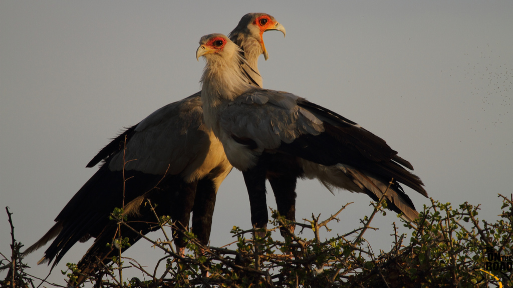
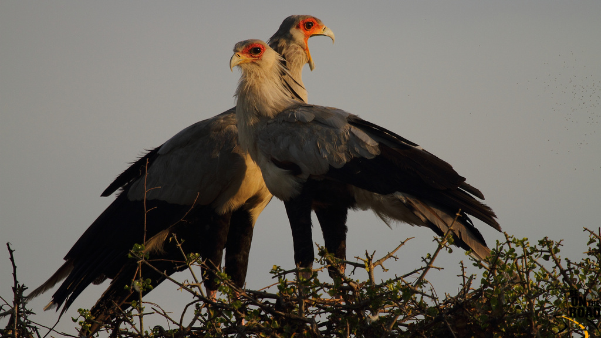

Sagittarius serpentarius
(Secretary Bird)
 

The secretarybird or secretary bird (Sagittarius serpentarius) is a large, mostly terrestrial bird of prey. Endemic to Africa, it is usually found in the open grasslands and savanna of the sub-Saharan region. John Frederick Miller described the species in 1779. A member of the order Accipitriformes, which also includes many other diurnal birds of prey such as eagles, hawks, kites, vultures, and harriers, it is placed in its own family, Sagittariidae.